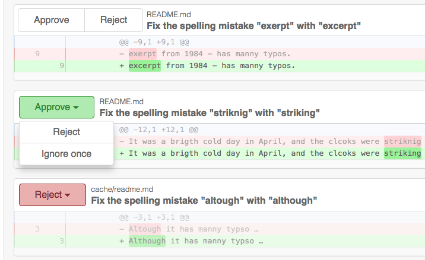

Ignore a Patch Once
Today we released a new version of Feram with some major improvements, mainly inspired by your feedback.
The most important change is that we provide a Ignore once button now. This gives you the following options:
- Approve - Accept the proposal and commit it to your git repository.
- Reject - Never show this issue in this particular context again. This works on a repository level, so it is only rejected for the current repository.
- Ignore once - Ignore this issue just once and show me again next time.

Ignore once is now the default for all new issues, whereas before issues were set to Approve by default. Since it is our default, we do not explicitly render Ignore once.
As soon as you hit Reject or Approve only the button of the selected option is shown. It is a drop-down is case you change your mind.
Notice that although we introduced a third option, we neither need more space for buttons, nor do we require you to make more than one click to approve or reject an issue.
Improved Conflict Resolution
In the past, if Feram found a lot of issues, you probably noticed that Feram could not apply all of them. So you had to wait for Feram to check its own commits and select those issues again.
With this release we completely overhauled our mechanism and implemented a new method for merging selected patches. You will find that from now on patches can only in rare cases not be combined.
Other Improvements
Here is a list of minor improvements that also ship with this release:
- Bitbucket URLs contain the merge request title / commit message
- Bitbucket notifications
- Tools may run as long as 8 minutes instead of just 1 minute per check so that Feram does not discard your checks at peek times
- Improved file type recognition
- General stability improvements
- Speed up of user interface rendering
- New patch generators with help of Retire.js, stylelint, and textlint